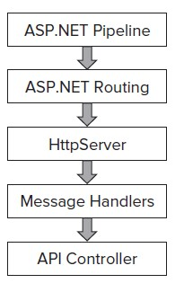
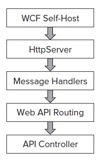
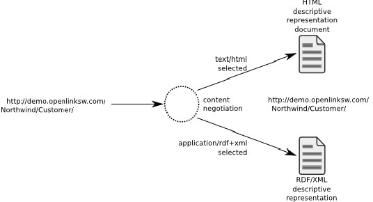
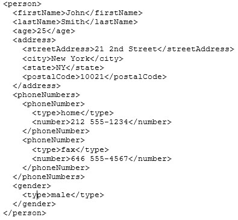
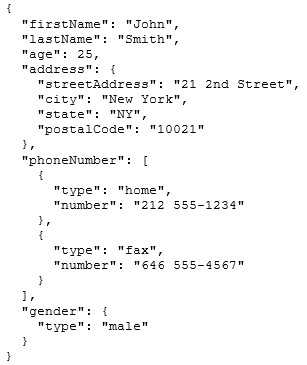

Web API
Web API is een framework die het gemakkelijk maakt om een HTTP service voor vele clients, incusief browsers en mobiele aparaten, te bouwen. Met de Web API Content Negotiation (zie 2.2) zijn we in staat om op basis van request van de client data terug te sturen. Dit houdt in dat als een client data in de vorm van JSON of XML opvraagt de Web API framework het request type behandelt en aan de hand hiervan de data in de juiste vorm terugstuurt op basis van het media type. De standaard ingestelde respons van de Web API wordt gegeven in de vorm van JSON en XML.
Web API is een ideaal platform voor het bouwen van HTTP based services, waarbij request en respons gebeurd aan de hand van het HTTP protocol. De client kan GET, PUT, POST en DELETE requests maken en de Web API zal hierop een adequate respons geven.[1]
Web API architectuur
Web API kan op twee manieren gehost worden. Je kan een web API hosten in ASP.NET of je kan ervoor kiezern om het zelf te hosten via een console of Windows service. Hieronder kunnen de verschillen in architectuur gevonden worden.
De manier van routing is in Web API is net wat anders dan ASP.NET MVC routing. De Web API maakt gebruik van HttpRouteCollection en Route. Het Web API team heeft de routing logic van MVC hergebruikt in web API. De enige reden dat er een verschil in routing tussen de twee gevallen is was om te voorkomen dat Web API afhankelijk werd van ASP.NET routing. Hierdoor is Web API onafhankelijk van ASP.NET class dependencies en is self-hosting via een console of Windows service mogelijk.
Het grootste verschil is dat bij Web API er geen toegang is tot de routing data in de Message Handlers, dit komt doordat het bepalen van de route op een later punt in de cyclus gebeurd dan bij ASP.NET MVC Routing.[1]
Wat is Content Negotioton in Web API?
Content Negotiation is het proces waarbij de beste representatie voor een respons, waar meerdere weergaves voor mogelijk zijn, wordt uitgekozen. Het onderliggende Web API framework implementeert Content Negotiation en hierdoor is het mogelijk voor een client om data van een specifiek media type op te vragen. Web API stuurt meestal zijn respons in JSON formaat, maar tijdens het opvragen van een bron kan een client meesturen in wat voor media type de respons gestuurd moet worden, hierdoor kan de Web API weten wat er gevraagd wordt en de juiste weergave als output voor de data geven.[1]
Hoe kan je Web API hosten?
Je kan kiezen voor web hosting of voor self-hosting. Hieronder is een code fragment te vinden waarmee je een self-hosting Web API kan aanmaken. (In het onderstaande fragment wordt er gehost via de specifieke URL localhost 8080, om deze te gebruiken heb je administrator rechten nodig)[1]using System.Web.Http;
using System.Web.Http.SelfHost;
var config = new HttpSelfHostConfiguration("http://localhost:8080");
config.Routes.MapHttpRoute( "API Default", "api/{controller}/{id}", new { id = RouteParameter.Optional });
using (HttpSelfHostServer server = new HttpSelfHostServer(config))
{
server.OpenAsync().Wait();
Console.WriteLine("Press Enter to quit.");
Console.ReadLine();
}
XML vs JSON
Extensible Markup Language (XML) is een opmaaktaal die een set regels voor het coderen van documenten in een leesbare manier voor zowel mensen als machines defineert. Het doel van XML was om voor simpliciteit, generalisatie en useability te zorgen.[2]JSON of JavaScript Object Notation is een open standard format dat leesbare tekst gebruikt om om data objecten, die bestaan uit attributen en waarden, te verzenden. Het wordt voornamelijk gebruikt om data tussen een server een een web applicatie te verzenden, en geldt als een alternatief voor XML.[3]
XML en JSON zijn beide ontworpen om voor een simpele standaardisatie van verschillende hiargische datastructuren en de manier waarop deze verstuurd worden te zorgen. Toch zijn er verschillen tussen de twee formaten. Een van de duidelijkste verschillen is de syntax, dit illustreren we aan de hand van het volgende voorbeeld.[4]

Beide fragmenten geven hetzelfde resultaat, maar er is duidelijk een andere manier van coderen te onderscheiden. XML is duidelijk makkelijker te begrijpen voor mensen, hierdoor wordt het vaak gebruik voor configuratie bestanden. JSON aan de andere kant is moeilijker te begrijpen voor de mens, maar is wel fijner voor machines.
Verder is XML een opmaaktaal en is het dus geschikt voor document beschrijvingen, de hierarchische elementen kunnen ook attributen hebben die niet aanwezig zijn in JSON. JSON heeft echter een beknoptere syntax voor het definieren van lijsten van elementen, waardoor deze geschikter is voor tekstopmaak serialisatie.[4]